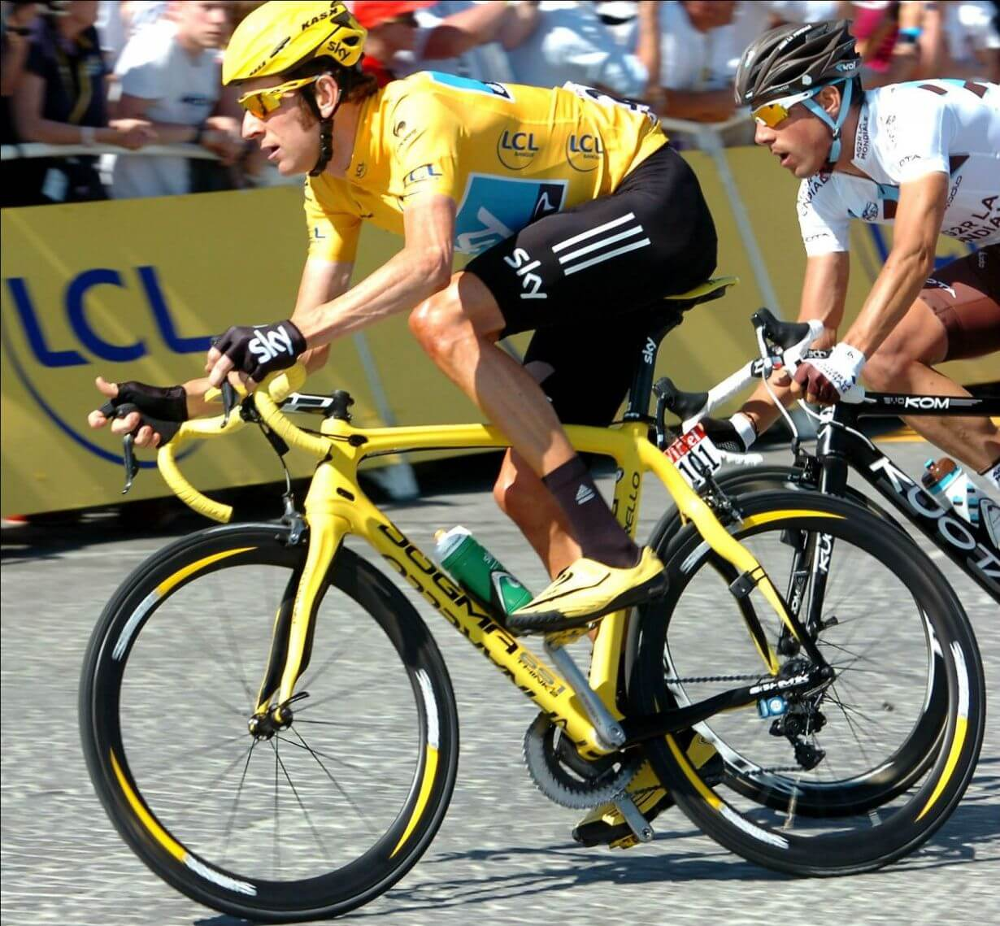

Всё о велосипедах
Все велосипеды подразделяются на типы (горные, шоссейные, городские, дорожные, BMX, круизеры, складные, электро, фэт-байки и др.), которые предназначены для разделения «железных коней» по способу их применения. Некоторые типы могут иметь подтипы. Такое разделение служит в первую очередь для облегчения выбора велосипеда под стиль езды велосипедиста, местность, по которой вы будете ездить, или же подбора байка под конкретные характеристики, которые присущи данному классу велосипедов. Далее мы вкратце рассмотрим самые распространенные типы великов, и расскажем вам, для чего они подходят лучше всего, что поможет вам выбрать велосипед под свой стиль езды.
Горные велосипеды или как их еще называют маунтинбайки (MTB) очень распространенный тип, особенно на территории стран СНГ. Не в последнюю очередь это происходит из-за того, что многие райдеры считают его наиболее универсальным велосипедом, который подходит как для города, так и для бездорожья. Частично это правда, но все же родная его стихия – маршруты без асфальтированного покрытия. Это не в последнюю очередь из-за широких покрышек с агрессивным протектором, которые имеют отличное сцепление с дорогой при езде по грязи, пыли, гравию и т.д. Но обратная сторона медали — быстрый износ протектора шин и более тяжелое педалирование (по сравнению с городскими или шоссерами) на асфальте. Данный тип обладает повышенными запасами прочности конструкции, за что мы часто расплачиваемся весом. Так же, из-за специфики своего применения, развивать очень большие скорости по прямой не так уж и просто, так как MTB не имеют достаточных передаточных чисел в трансмиссии. Горные велики могут иметь различную степень амортизации: с амортизационной вилкой или двухподвесы. Подробнее тему амортизации велосипеда мы рассмотрим ниже.
И так, кому же подойдет горный велосипед? Велосипедистам, которые большую часть своего маршрута проезжают по бездорожью и/или холмистой местности с резкими перепадами высот, а так же людям, живущим в сельских районах. Если вы катаетесь по городу агрессивно и частенько съезжаете со ступенек верхом на железном коне, то горный велосипед будет явно актуальней, например, все того же городского. Ну и новичкам в мире велотуризма или велоспорта он тоже подойдет.
Шоссейные спортивные велосипеды (шоссеры в простонародье) полная противоположность горным. Они легкие, быстрые, с узкими колесами больших диаметров (28 дюймов) и практически с полным отсутствием протектора. Узкие колеса дают нам преимущество в скорости, но ухудшают проходимость. Из-за меньшего контакта с землей возникает большее давление на грунт, что также увеличивает вероятность прокола камеры колеса. Поэтому они практически не приспособлены к езде по бездорожью. Шоссейные велосипеды не имеют какой-либо амортизации, т.к. последняя снижает скоростные характеристики и увеличивает вес байка. Ареал применения – хорошее асфальтированное покрытие. Трансмиссия шоссейника имеет очень большие звезды спереди и маленькие сзади, что обеспечивает большие передаточные числа. Это в свою очередь дает хорошую скорость по прямой. Следует отметить спортивную посадку, когда велосипедист завален вперед для меньшего сопротивления ветру. Многим она может показаться неудобной.
Езда на спортивном шоссере – это отдельная религия, кому-то нравится, а кому-то нет. Поэтому перед покупкой советуем вам взять покататься на время данный тип велосипеда у друга.
Шоссейный велосипед советуется выбирать более опытным велосипедистам. Он хорошо подходит для скоростных заездов по шоссе и в городской черте.
Городской и туристический велосипеды – это нечто среднее между горными и шоссейными. Они являются золотой серединой при использовании двухколесного транспортного средства для езды по городу, паркам, лесным тропам. Их очень удобно использовать для перевозки вещей, так как зачастую они комплектуются дополнительными компонентами: багажник, крылья, защита цепи, электрооборудование. Стоит отметить удобную прямую посадку. Туристические велосипеды зачастую оборудуются регулируемым по высоте и углу выносом руля. Городские велосипеды часто могут складываться, для более легкой транспортировки в багажнике машины или для хранения на балконе в вашей квартире. Данный тип велосипедов в основном либо лишен амортизации полностью или же имеет амортизационную вилку с минимальным ходом (до 80 мм). Диаметр колес тоже разнообразен, начиная от 28 дюймов и заканчивая 20-ю (хотя бывают и другие модификации). Покрышки имеют средний протектор.
Эти типы велосипедов хорошо подходят для повседневных поездок на работу, недалеких (в случае туристического байка – далеких) путешествий на рыбалку или же вылазок на дачу. Не стоит ожидать от них хорошей проходимости или скоростных качеств, ведь городские и туристические велосипеды – нечто среднее между этими понятиями.

Существует множество других типов и подтипов велосипедов. Например, BMX велосипеды, предназначенные для выполнения трюков и прыжков на рампе. Еще можно перечислить два подтипа горных велосипедов: даунхилл байки (предназначены для скоростных спусков с горы) и фэт-байки (горные велосипеды повышенной проходимости с огромными колесами). Но все они очень специфичны, и зачастую выбираются уже более опытными велосипедистами.